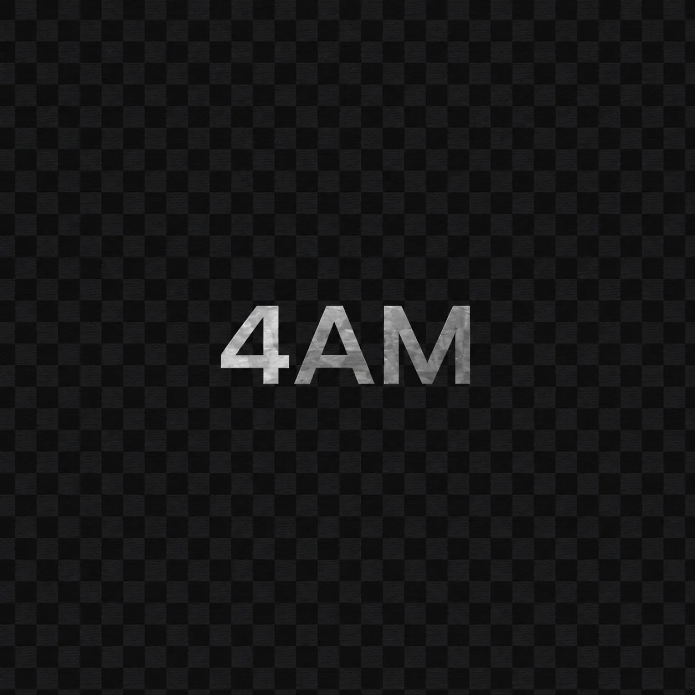

4AM (Demo)
0:00
0:00
The New Single

Started in 2025, 4Th makes mix genres shit that no one cares Created first demo “dime of hope” in 2025 as a band but shortly broke up because of people isues. From now and then 4Th started creating music by itself
New EP “open strings” will be out in 9/23/26!!!
514.